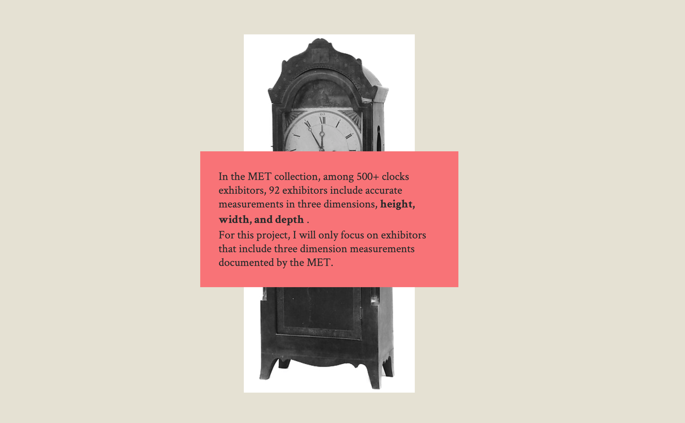

Project 3 - Exploring Clocks in MET (Interaction)
Switching the topic from paintings, this project is focused on the dimensions of clocks in the MET collection. It is really interesting to discover clocks that are different from what we usually see, varies from 3-meter-high clock to tiny watches. Based on the dimension provided by the MET API, I analyzed the dimension from height, width, and depth.
Link: Exploring Clocks in METProcess
Besides to the dimensions of clocks, I also wanted to compare data based on medium. Therefore, users would have multiple options to filter data based on the medium. Within each medium, the isometric models of clocks would be presented in chronological order.
When users click any isometric model, information about this clock will appear at the bottom of the page.
Project Overview
Not only presenting the data, this project is more like a story telling. When users scroll down to the page, animation will be presented at different section of the page. I used a clock as an example to introduce how I interpret a clock image into an isometric model. At the end of page, three graphs are provided based on three dimensions of all clocks
